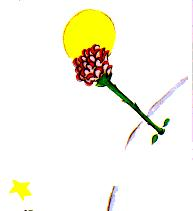

Le cinquième jour, toujours grâce au mouton, ce secret de la vie du petit prince me fut révélé. Il me demanda avec brusquerie, sans préambule, comme le fruit d'un problème longtemps médité en silence:
- Un mouton, s'il mange les arbustes, il mange aussi les fleurs ?
- Un mouton mange tout ce qu'il rencontre.
- Même les fleurs qui ont des épines ?
- Oui. Même les fleurs qui ont des épines.
- Alors les épines, à quoi servent-elles ?
Je ne le savais pas. J'étais alors très occupé à essayer de dévisser un boulon trop serré de mon moteur. J'étais très soucieux car ma panne commençait de m'apparaître comme très grave, et l'eau à boire qui s'épuisait me faisait craindre le pire.
- Les épines, à quoi servent-elles ?
Le petit prince ne renonçait jamais à une question, une fois qu'il l'avait posée. J'étais irrité par mon boulon et je répondis n'importe quoi:
- Les épines, ça ne sert à rien, c'est de la pure méchanceté de la part des fleurs !
- Oh!
Mais après un silence il me lança, avec une sorte de rancune:
- Je ne te crois pas ! Les fleurs sont faibles. Elles sont naïves. Elles se rassurent comme elles peuvent. Elles se croient terribles avec leurs épines...
Je ne répondis rien. A cet instant-là je me disais: "Si ce boulon résiste encore, je le ferai sauter d'un coup de marteau." Le petit prince dérangea de nouveau mes réflexions:
- Et tu crois, toi, que les fleurs...
- Mais non ! Mais non ! Je ne crois rien ! J'ai répondu n'importe quoi. Je m'occupe, moi, de choses sérieuses !
Il me regarda stupéfiait.
- De choses sérieuses !
Il me voyait, mon marteau à la main, et les doigts noirs de cambouis, penché sur un objet qui lui semblait très laid.
- Tu parles comme les grandes personnes !
Ça me fit un peu honte. Mais, impitoyable, il ajouta:
- Tu confonds tout... tu mélanges tout !
Il était vraiment très irrité. Il secouait au vent des cheveux tout dorés:
- Je connais une planète où il y a un Monsieur cramoisi. Il n'a jamais respiré une fleur. Il n'a jamais regardé une étoile. Il n'a jamais aimé personne. Il n'a jamais rien fait d'autre que des additions. Et toute la journée il répète comme toi: "Je suis un homme sérieux ! Je suis un homme sérieux !" et ça le fait gonfler d'orgueil. Mais ce n'est pas un homme, c'est un champignon !
- Un quoi ?
- Un champignon !
Le petit prince était maintenant tout pâle de colère. 
- Il y a des millions d'années que les fleurs fabriquent des épines. Il y a des millions d'années que les moutons mangent quand même les fleurs. Et ce n'est pas sérieux de chercher à comprendre pourquoi elles se donnent tant de mal pour se fabriquer des épines qui ne servent jamais à rien ? Ce n'est pas important la guerre des moutons et des fleurs ? Ce n'est pas plus sérieux et plus important que les additions d'un gros Monsieur rouge ? Et si je connais, moi, une fleur unique au monde, qui n'existe nulle part, sauf dans ma planète, et qu'un petit mouton peut anéantir d'un seul coup, comme ça, un matin, sans se rendre compte de ce qu'il fait, ce n'est pas important ça !
Il rougit, puis reprit:
- Si quelqu'un aime une fleur qui n'existe qu'à un exemplaire dans les millions et les millions d'étoiles, ça suffit pour qu'il soit heureux quand il les regarde. Il se dit: "Ma fleur est là quelque part..." Mais si le mouton mange la fleur, c'est pour lui comme si, brusquement, toutes les étoiles s'éteignaient ! Et ce n'est pas important ça !
Il ne put rien dire de plus. Il éclata brusquement en sanglots. La nuit était tombée. J'avais lâché mes outils. Je me moquais bien de mon marteau, de mon boulon, de la soif et de la mort. Il y avait, sur une étoile, une planète, la mienne, la Terre, un petit prince à consoler ! Je le pris dans les bras. Je le berçai. Je lui disais: "La fleur que tu aimes n'est pas en danger... Je lui dessinerai une muselière, à ton mouton... Je te dessinerai une armure pour ta fleur... Je..." Je ne savais pas trop quoi dire. Je me sentais très maladroit. Je ne savais comment l'atteindre, où le rejoindre... C'est tellement mystérieux, le pays des larmes.
| Chapitre VI | |
Capítulo VI |
| Index | Capítulo VII | |
| Chapitre VIII | Capítulo VIII |